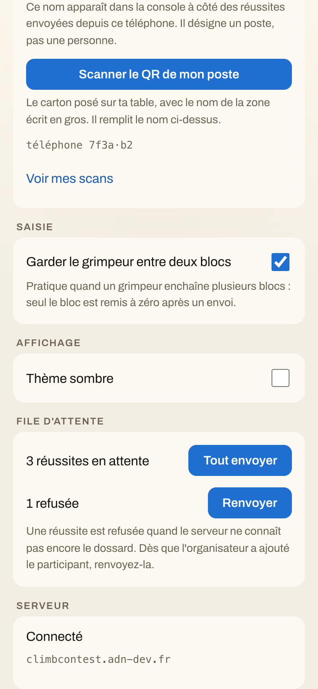
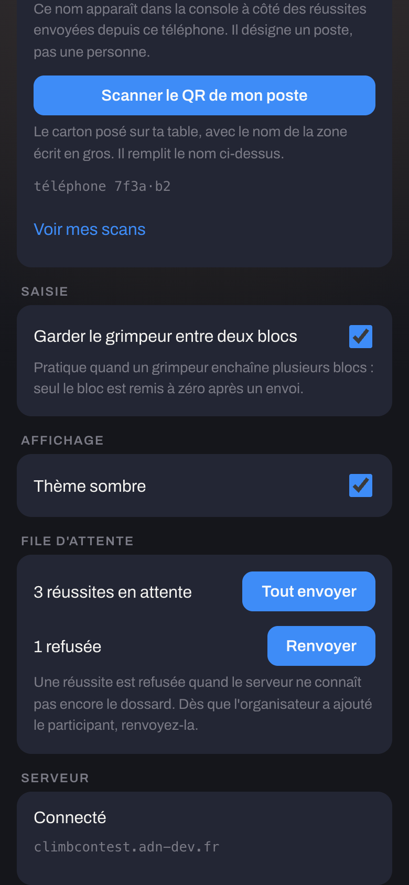
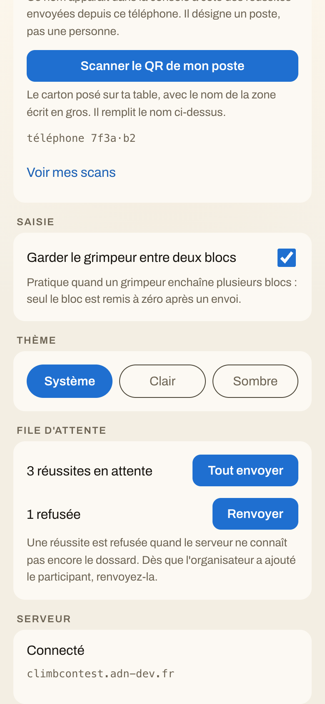
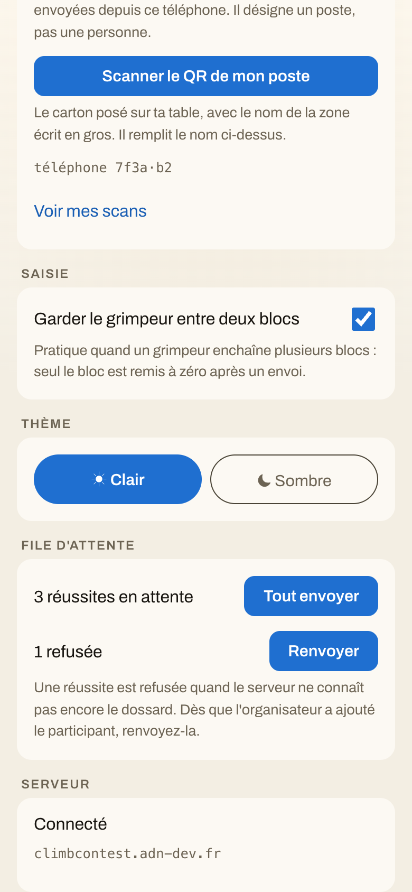
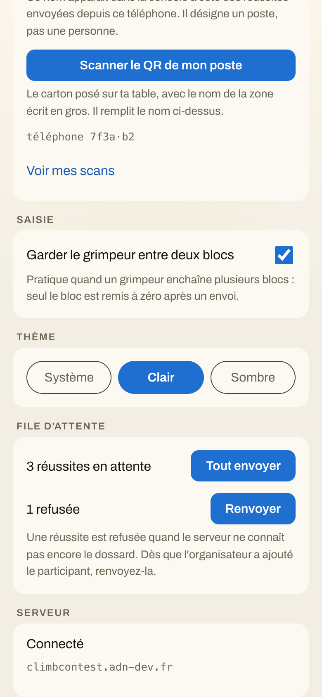

Variante B retenue par Adrien le 03/09/2026.
L'application juge réelle, 390 × 844, écran Réglages. Trois façons de poser le même réglage. Le téléphone est en clair sur la première rangée, en sombre sur la seconde — dans les deux cas le juge n'a encore rien touché.
« Thème sombre », la même case que « Garder le grimpeur ». Deux positions : on ne peut plus revenir à « suis le téléphone ».


Système / Clair / Sombre. « Système » garde le défaut de la spec 039, et reste atteignable après coup : c'est ce qu'un interrupteur à deux positions ne sait pas faire.

Clair / Sombre, avec l'icône. Le plus direct, mais pas de retour au réglage du téléphone.

Le mécanisme, capturé sur la variante B : le téléphone dit une chose, le réglage en impose une autre — et c'est le réglage qui gagne.
